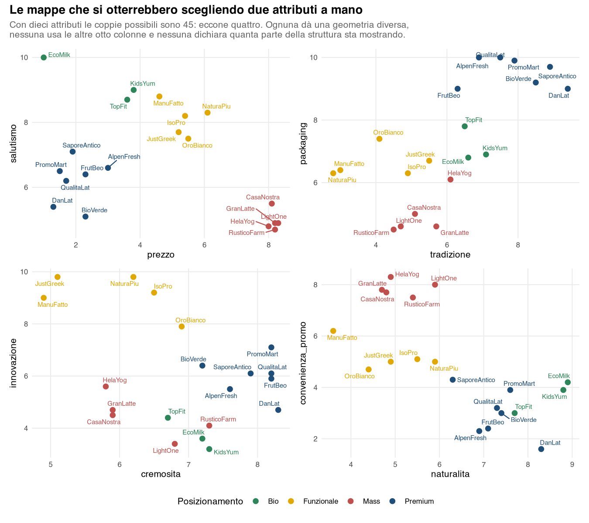
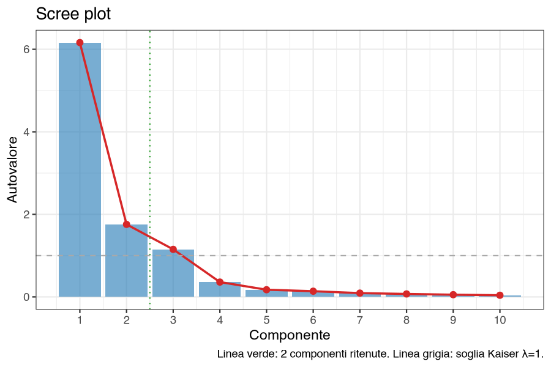
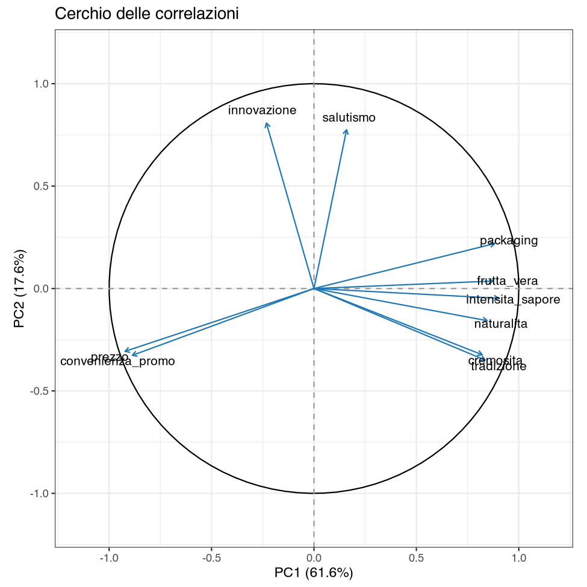
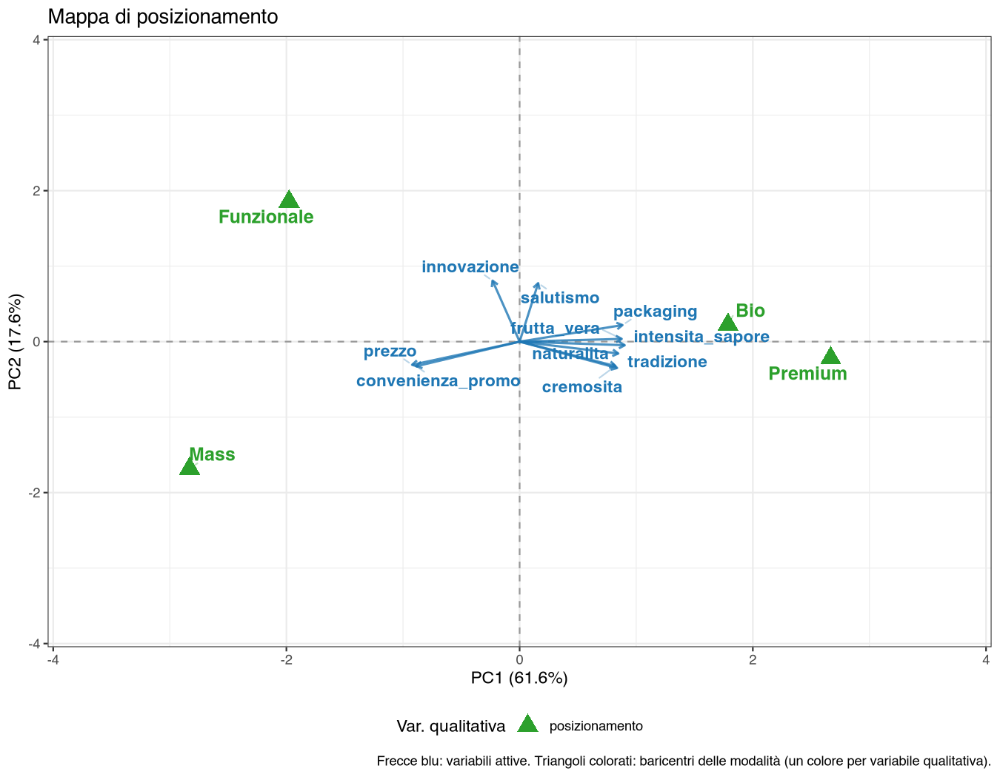
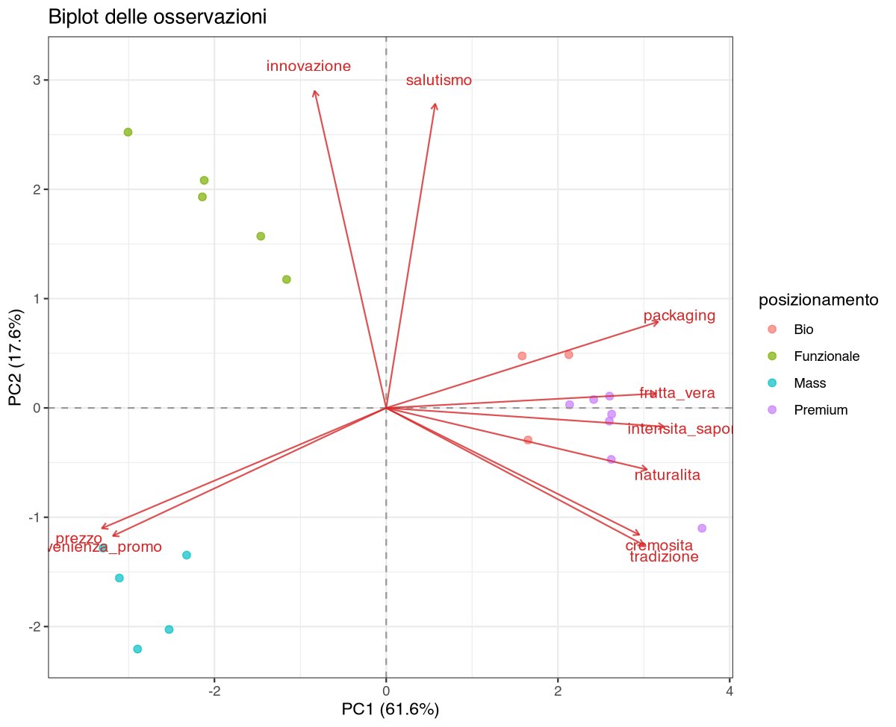
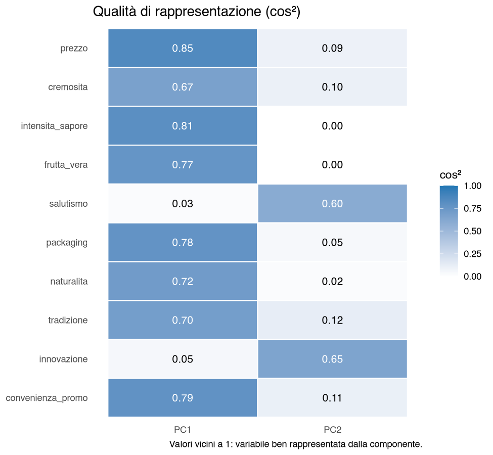

35 Caso studio — Dove siamo sulla mappa: il posizionamento di venti marche
35.1 La situazione
Il brand manager di un’azienda lattiero-casearia deve decidere dove collocare un nuovo yogurt. Ha a disposizione i risultati di un panel: venti marche valutate da un campione di consumatori su dieci attributi — prezzo, cremosità, intensità di sapore, frutta vera, salutismo, packaging, naturalità, tradizione, innovazione, convenienza promozionale — ciascuno su scala 1–10.
La domanda è: com’è fatto il mercato, e quali zone sono affollate e quali libere?
35.2 Il problema, prima della tecnica
Dieci attributi per venti marche fanno una tabella di duecento numeri, che nessuno riesce a leggere a colpo d’occhio. La soluzione istintiva è disegnare una mappa con due attributi: prezzo e salutismo, per esempio. Ma le coppie possibili sono 45, e ciascuna dà una geometria diversa.

Il problema non è che queste mappe siano sbagliate: ciascuna mostra fedelmente i due attributi che usa. Il problema è che non si sa quale scegliere, e che qualunque scelta butta via otto colonne su dieci.
35.3 Passo 1 — Comprimere dieci attributi in due assi
Menu: Analisi → AnalisiMercato → PCA → Analisi delle Componenti Principali
Variabili attive → i dieci attributi; Variabile identificativa → marca; Standardizza → attivo; Componenti da ritenere → 2; Rotazione → Nessuna.
Impostazioni
| Variabili attive | Osservazioni (n) | Standardizzate | Componenti ritenute | Rotazione |
|---|---|---|---|---|
| 10 | 20 | Sì (matrice di correlazione) | 2 | Nessuna |
Autovalori e varianza spiegata (estratto)
| Componente | Autovalore | % varianza | % cumulata |
|---|---|---|---|
| PC1 | 6,163 | 61,63 | 61,63 |
| PC2 | 1,757 | 17,57 | 79,20 |
| PC3 | 1,152 | 11,52 | 90,72 |
| PC4 | 0,359 | 3,59 | 94,31 |
| PC5 | 0,174 | 1,74 | 96,05 |
Lettura. Due componenti riassumono il 79,2% dell’informazione contenuta nei dieci attributi. È possibile perché gli attributi sono fortemente correlati fra loro: chi è valutato bene su packaging lo è anche su intensità di sapore (\(r = 0{,}91\)), e la convenienza di prezzo va nettamente all’opposto del packaging (\(r = -0{,}87\)), della frutta vera (\(-0{,}81\)) e dell’intensità di sapore (\(-0{,}80\)). Le dieci colonne non contengono dieci informazioni indipendenti.
Le prime tre componenti principali (PC; PC1, PC2, … indicano la prima, la seconda… componente principale) arrivano al 90,7%: il salto fra PC3 (11,5%) e PC4 (3,6%) suggerisce che la struttura reale abbia tre dimensioni, non due. Ci torniamo alla fine, perché è il punto in cui questo caso diventa interessante.

35.4 Passo 2 — Che cosa sono i due assi
Un asse non ha significato finché non glielo si dà, e glielo danno i loadings: le correlazioni fra ciascun attributo e la componente.
Coordinate delle variabili (loadings) e Contributi delle variabili (%)
| Variabile | PC1 | PC2 | ctr PC1 | ctr PC2 |
|---|---|---|---|---|
| prezzo | −0,922 | −0,307 | 13,81 | 5,35 |
| convenienza_promo | −0,887 | −0,326 | 12,76 | 6,05 |
| intensita_sapore | 0,901 | −0,048 | 13,18 | 0,13 |
| packaging | 0,882 | 0,220 | 12,63 | 2,74 |
| frutta_vera | 0,875 | 0,037 | 12,44 | 0,08 |
| naturalita | 0,846 | −0,157 | 11,61 | 1,40 |
| tradizione | 0,836 | −0,349 | 11,34 | 6,95 |
| cremosita | 0,821 | −0,323 | 10,94 | 5,95 |
| innovazione | −0,232 | 0,808 | 0,88 | 37,16 |
| salutismo | 0,159 | 0,775 | 0,41 | 34,18 |

PC1 (61,6%) oppone otto attributi su dieci: da un lato cremosità, intensità, frutta vera, packaging, naturalità e tradizione; dall’altro la convenienza di prezzo e le promozioni. Ricordando che prezzo alto significa economico, il loading negativo dice che a destra stanno le marche care. È l’asse qualità percepita e prezzo alto contro convenienza, e da solo vale i tre quinti dell’informazione.
PC2 (17,6%) è costruito quasi solo da due attributi — innovazione (37,2% del contributo) e salutismo (34,2%) — che su PC1 non dicono quasi nulla (contributi inferiori all’1%). È l’asse salute e innovazione, cioè ciò che distingue un prodotto “funzionale” da uno tradizionale, indipendentemente dal suo prezzo.
I contributi servono proprio a questo: dicono quali attributi hanno costruito l’asse, e quindi come chiamarlo. Su PC1 gli otto attributi pesano fra l’11% e il 14% ciascuno — nessuno domina, l’asse è una sintesi genuina. Su PC2 due soli attributi pesano il 71%.
35.5 Passo 3 — La mappa
Il panel contiene anche il posizionamento dichiarato di ciascuna marca (Premium, Bio, Funzionale, Mass). Non entra nel calcolo delle componenti: si aggiunge come variabile qualitativa supplementare e il modulo ne proietta i baricentri sul piano già costruito.
Variabili qualitative per la mappa di posizionamento (opzionali) → posizionamento; Mappa di posizionamento (variabili e baricentri, no osservazioni) → attivo; ▸ MAPPA · Mostra vettori variabili attive → attivo.

Lettura. I quattro posizionamenti occupano quattro quadranti diversi:
- Premium (PC1 = +2,7) all’estremo destro: caro, cremoso, tradizionale, ben confezionato, neutro su salute e innovazione.
- Mass (−2,8; −1,7) all’estremo opposto: economico, promozionale, basso su tutti gli attributi di prodotto.
- Funzionale (−2,0; +1,9) in alto a sinistra: prezzo medio-basso ma il punteggio più alto su innovazione, e alto anche su salutismo (dove però il primo è il Bio).
- Bio (+1,8; +0,2) vicino al Premium, leggermente più in alto.
Nella parte alta del quadrante in alto a destra — prodotto caro e di qualità e insieme fortemente orientato a salute e innovazione — non c’è nessun baricentro (il Bio vi entra appena, a ridosso dell’asse orizzontale). Un’area senza baricentri, però, non è necessariamente un’area senza marche: una marca può trovarsi lì anche se il baricentro del suo gruppo sta altrove. Per dirlo bisogna guardare le singole marche, che il modulo mostra nel Biplot (osservazioni nel piano principale); con Variabile qualitativa supplementare per biplot → posizionamento i punti sono colorati per gruppo.

Le singole marche confermano che sul piano quella zona è libera. È l’indicazione che il brand manager cercava, e nessuna delle 45 mappe a due attributi la mostrava in modo così netto. Resta però un’area da approfondire, non ancora un’opportunità dimostrata: le due marche più vicine, EcoMilk e TopFit, sono Bio, e le Bio sono proprio le marche che il piano rappresenta peggio, come mostra il passo successivo.
35.6 Passo 4 — Il controllo che quasi nessuno fa
Prima di portare la mappa in riunione va fatta una verifica: ogni marca è rappresentata bene su questo piano? La risposta è nei coseni quadrati (cos²), che misurano quanta parte della posizione di ciascuna marca il piano riesce a mostrare.
Si attiva Mostra tabella contributi/coseni² delle osservazioni: con venti marche il limite di default (20 osservazioni) le mostra tutte. Il modulo dà le colonne PC1 e PC2; la colonna PC1 + PC2 è la loro somma, calcolata a mano, e le righe sono state riordinate in base a questa somma.
Coseni quadrati delle osservazioni (cos²) — estratto ordinato
| Marca | PC1 | PC2 | PC1 + PC2 |
|---|---|---|---|
| KidsYum | 0,303 | 0,010 | 0,313 |
| EcoMilk | 0,344 | 0,018 | 0,362 |
| TopFit | 0,391 | 0,035 | 0,427 |
| OroBianco | 0,322 | 0,331 | 0,652 |
| SaporeAntico | 0,744 | 0,000 | 0,744 |
| … | |||
| DanLat | 0,847 | 0,076 | 0,923 |
| ManuFatto | 0,553 | 0,390 | 0,943 |
| CasaNostra | 0,844 | 0,128 | 0,972 |
Le tre marche peggio rappresentate — con appena il 31%, 36% e 43% della loro posizione visibile sul piano — sono KidsYum, EcoMilk e TopFit. Sono esattamente le tre marche Bio.
Il baricentro “Bio” della mappa, quindi, riassume tre marche che il piano non sa descrivere: la loro posizione apparente vicino al Premium è in buona parte un artefatto della proiezione. Dove sta il resto? Su PC3, che vale l’11,5% e che oppone salutismo, naturalità e frutta vera (loadings −0,58, −0,40, −0,35) a innovazione, packaging e intensità di sapore (+0,50, +0,36, +0,34). È la dimensione “naturale e salutare senza innovazione tecnologica”: per le tre marche Bio questa componente vale da sola il 46–66% della loro posizione.
La mappa a due dimensioni resta valida per le altre diciassette marche, che hanno cos² fra 0,65 e 0,97. Per il segmento Bio va però detto che il piano non basta, e che quelle marche si distinguono su una terza dimensione — la naturalità contrapposta all’innovazione — che la mappa non mostra.
Senza i cos², questa mappa avrebbe portato in riunione la conclusione che Bio e Premium presidiano la stessa zona. È falso, ed è il tipo di errore che la PCA rende invisibile se ci si ferma al grafico.

35.7 Che cosa ha aggiunto la PCA
- Ha scelto gli assi al posto nostro. Invece di una delle 45 coppie possibili, due direzioni costruite per catturare il massimo dell’informazione disponibile, con una misura esplicita di quanta ne catturano: 79,2%.
- Ha reso leggibile la struttura del mercato. I quattro posizionamenti, che non erano stati usati per costruire il piano, si separano nettamente: è la conferma che gli assi hanno colto la logica reale del mercato e non un artefatto.
- Ha indicato una zona libera sul piano, verificata sulle singole marche: è la risposta alla domanda di partenza, da approfondire prima di trasformarla in una decisione.
- Ha dichiarato i propri limiti. Nessuna delle 45 mappe artigianali avrebbe potuto segnalare che tre marche su venti sono fuori fuoco: i cos² lo fanno, e lo fanno prima che l’errore finisca in una decisione.
35.8 Le funzioni usate
| Passo | Analisi | Opzioni principali |
|---|---|---|
| Ridurre la dimensionalità | Analisi delle Componenti Principali | 10 attributi; marca come identificativo; standardizzate; 2 componenti |
| Nominare gli assi | (stessa analisi) | tabelle Loadings e Contributi; cerchio delle correlazioni |
| Costruire la mappa | (stessa analisi) | posizionamento come qualitativa supplementare; mappa attiva |
| Controllare le singole marche | (stessa analisi) | biplot delle osservazioni, colorato con posizionamento |
| Verificare la qualità | (stessa analisi) | Mostra tabella contributi/coseni² delle osservazioni: tabella dei cos² delle osservazioni (la heatmap dei cos² riguarda le variabili) |
| Controllare le dimensioni nascoste | (stessa analisi) | rilanciare con 3 componenti e rileggere loadings e cos² |
35.9 Da portare nel report
- Attributi usati, scala di misura e verso delle scale (qui: prezzo alto = economico).
- Standardizzazione dichiarata, e il criterio con cui sono state ritenute due componenti.
- Percentuale di varianza spiegata dal piano, riportata insieme alla mappa e non solo nel testo.
- Il nome dato a ciascun asse, giustificato con loadings e contributi.
- Le marche con cos² basso, dichiarate come tali: la mappa vale per le altre.
- Se una dimensione ulteriore è rilevante, dirlo: una mappa in due dimensioni è una scelta di rappresentazione, non una proprietà del mercato.